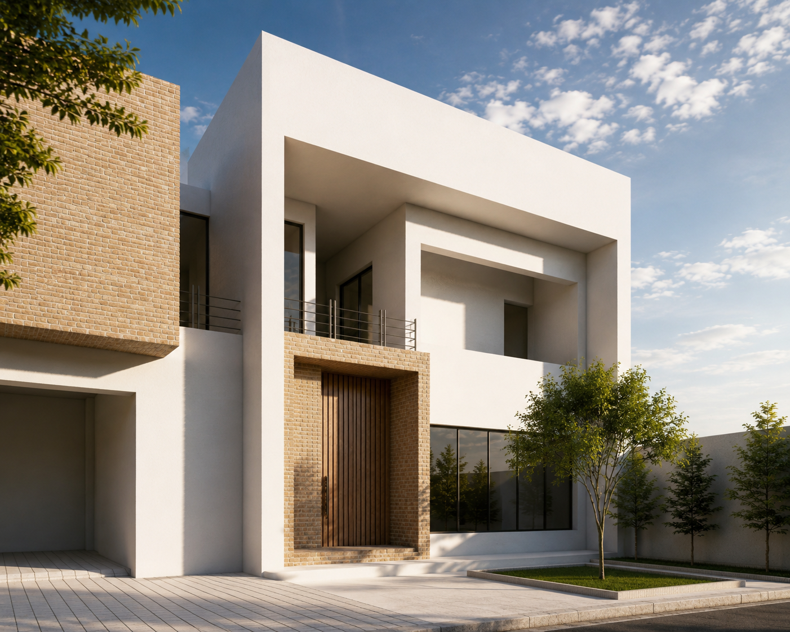
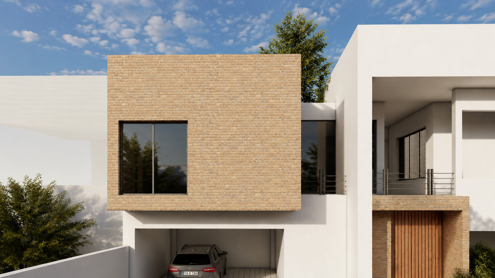

Residential Architecture

Location
Year
Scope
Villa A63 Located in Jam, a region characterized by an intense hot climate, Villa A63 is conceived as a climate-responsive residence that embraces passive environmental design as its primary architectural strategy. The project is shaped around the principle of natural air circulation, allowing prevailing breezes to flow freely through the house and creating comfortable living conditions with minimal reliance on mechanical cooling. The spatial organization promotes continuous cross-ventilation, with carefully positioned openings that connect interior spaces and encourage air movement throughout the villa. This approach not only improves indoor comfort but also significantly reduces energy consumption during the region's long, hot seasons. Material selection further reinforces the building's environmental performance. Locally produced brick anchors the villa within its regional context while minimizing transportation impacts and supporting local craftsmanship. White cement is used on exposed surfaces to reflect solar radiation rather than absorb it, reducing heat gain and helping maintain cooler interior temperatures throughout the day. The villa is arranged over two levels, with the public functions—including the living room, dining area, and kitchen—occupying the ground floor, where they extend seamlessly toward the outdoor spaces. The upper floor accommodates the private bedrooms, providing quieter, more intimate spaces while benefiting from enhanced natural ventilation and views of the surrounding landscape. Villa A63 demonstrates how thoughtful planning, locally sourced materials, and passive environmental strategies can work together to create an architecture that is both sustainable and deeply responsive to its climate and place.

